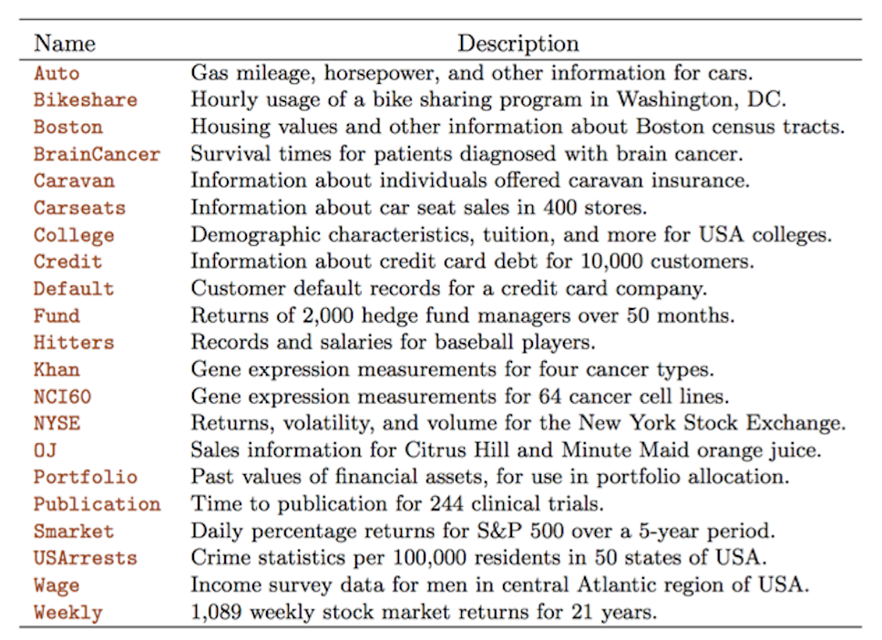

教科书配套的 R 包 ISLR2 提供了非常丰富的数据集:

当你运行 library(ISLR2) 时, 这些相关的数据集就已经加载到你当下的工作空间中. 以数据集 Wage 为例,
你可以运行 ?Wage 来查看相关文档,
或 head(Wage) 来查看它的前六个观测.
从上面的 21 个数据集中, 选择一个数据集, 用它来训练决策树模型和随机森林模型.
用 Quarto或Rmarkdown 来完成本次作业. 你提交的作业, 格式应该类似一个小报告, 它包括以下几个部分:
数据说明. 用中文简短地介绍这个数据集,
以 Wage 为例, 你应该说明:
Wage数据集的调查对象为美国亚特兰大中部地区3000名男性工人, 它包括11个变量, 如:wage(工人工资),health_ins(是否有健康保险),maritl(婚姻状况),education(教育程度), 等等.
探索性数据分析. 使用任何机器学习模型之前, 你都应该先了解数据集的基本特点, 做一些简单的探索性分析: 计算所有变量的最大值/最小值/均值, 画图看一看变量之间是否存在明显的线性或非线性关系, 计算相关性矩阵, 等等.
决策树模型. 首先将数据集按某个比例, 分成训练集和测试集两部分, 调用 tree 包来训练决策树模型, 计算模型在测试集上的均方误.
随机森林模型. 用同样的训练集和测试集, 调用 randomForest 包来训练随机森林模型, 计算模型在测试集上的均方误.
在作业的开头, 选定随机数种子 set.seed(1). 确保你的结果可以在我的电脑上重复.
我们在课堂上只介绍了回归树模型 (ie 响应变量 Y is quantitative), 没有介绍分类树 (ie 响应变量 Y is qualitative).
如果你用的是回归树,
那么你在选择数据集时, 应该选择那些响应变量是定量型的数据集, 比如 Hitters 和 Wage. 当然, 你也可以选择使用分类树, 学习一下教材对应章节即可.
不能直接套用教材或课程资料里, 演示随机森林和决策树模型时用到的例子. 你应该模仿教材或课程资料里的步骤, 把它们用到新数据集上.
类似作业二, 你需要同时提交源代码和生成的 HTML 文件, 请将它们打包压缩成 ZIP 文件后上传.